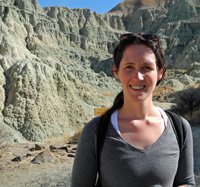

News
I finished my PhD in August 2013, and joined Google as a Software Engineer.
About Me
I completed my PhD the University of Wisconsin - Madison in the Department of Computer Sciences in August 2013. My research interests include using analytic models to project future computer architecture trends. I worked with Professor Karu Sankaralingham in the Vertical Research Group.
Prior to joining UW-Madison, I received my B.S. in Engineering and B.A. in Mathematics from Swarthmore College.